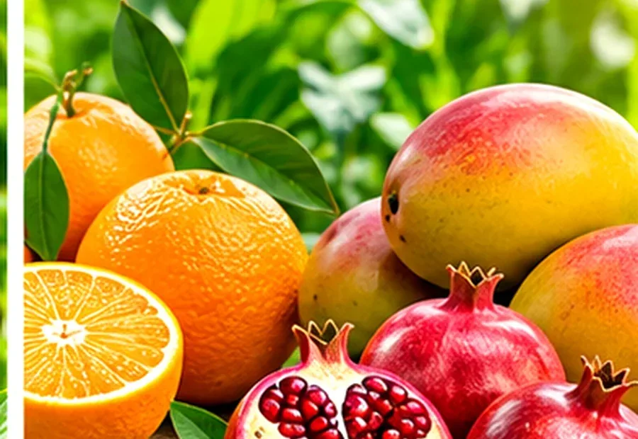
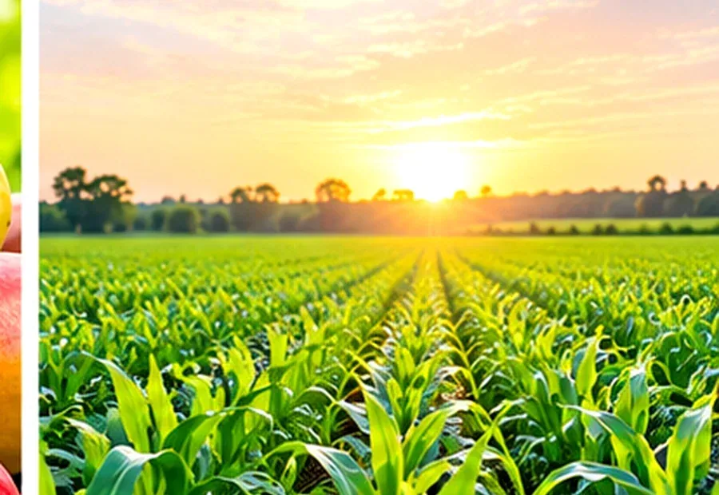

Rice & Agricultural Commodities
We welcome enquiries from buyers and trading partners seeking suitable commodity supply. Product grade, quality parameters, packing format, quantity and shipment terms are discussed before confirming an offer.
Wholesale and export opportunities across selected agricultural commodities.
Our commodities activity includes rice, fresh fruits, safety matches and other general merchandise. Each enquiry is considered on its own commercial terms, including product grade, packing, quantity, origin, destination and delivery requirements.


We welcome enquiries from buyers and trading partners seeking suitable commodity supply. Product grade, quality parameters, packing format, quantity and shipment terms are discussed before confirming an offer.
Fresh produce enquiries require attention to variety, grade, seasonality, packing, handling and destination requirements. Other merchandise may be considered where the product details and commercial terms can be clearly established.